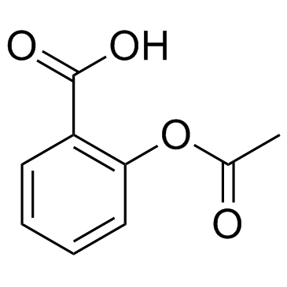
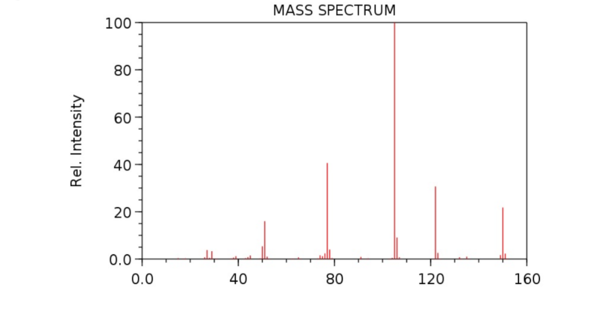

- In your experiment, crude ester is separated from unreacted acid through extraction. Explain with the help of a flow diagram various steps involved in this separation of crude ester from unreacted acid. What is the purpose of each extraction step? (Use chemical equations wherever necessary).
- In the Safety Precautions, there is a suggestion to use sodium bicarbonate for cleaning. What is the rationale for this suggestion?
- Based on the nomenclature of the following esters, give the two compounds (a carboxylic acid and an alcohol) that would be used in its synthesis.
3-methylbutyl ethanoate
2-methylpropyl propanoate
- Aspirin (acetylsalicylic acid, figure 5) is an ester used for pain relief and fever reduction. Based on its structure, give the two compounds (a carboxylic acid and an alcohol) that can be used in its synthesis.

Figure 5. Structure of aspirin (acetylsalicylic acid)
- How will you identify the absence of starting materials from 1H NMR and 13C NMR spectra of the product?
- Using structures and electron pushing arrows, explain the fragmentation pattern in the following mass spectrum of an ester. Mark and label molecular (parent) ion peak and base peak. Write the mechanism for the formation of the base peak and two other peaks of interest.

Figure 6. Mass spectrum of ethyl benzoate (Mol. Formula: C9H10O2)